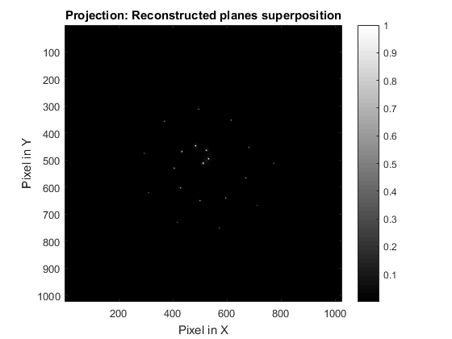
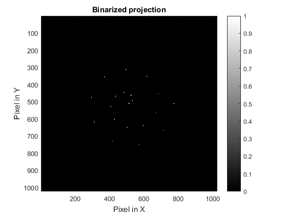
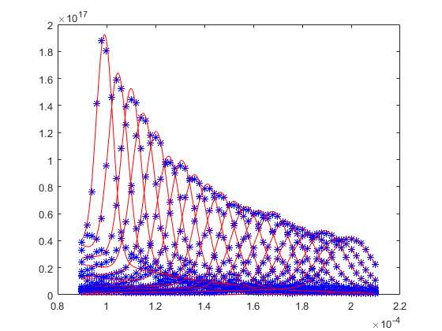
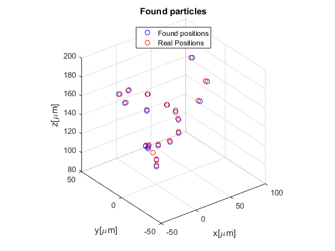

Contents
Read and prepare image
name = 'ejemplo1';
zs = 6e-3;
lambda = 405e-9;
PixelSize = 6e-6;
Manual = 0;
if strcmp(name, 'ejemplo1')
HoloCont = imread('holo.pgm');
HoloCont = double(HoloCont);
zs = 6e-3;
lambda = 405e-9;
PixelSize = 6e-6;
Manual = 0;
elseif strcmp(name, 'ejemplo2')
HoloCont = imread('holo.tiff');
HoloCont = double(HoloCont);
zs = 8e-3;
lambda = 405e-9;
PixelSize = 6e-6;
Manual = 0;
else
HoloCont = imread(name);
HoloCont = double(HoloCont);
end
Reconstruction of several planes
if strcmp(name, 'ejemplo1')
StartPlane = 90e-6;
EndPlane = 210e-6;
SamplePlane = 2e-6;
elseif strcmp(name, 'ejemplo2')
StartPlane = 180e-6;
EndPlane = 220e-6;
SamplePlane = 2e-6;
else
StartPlane = 180e-6;
EndPlane = 220e-6;
SamplePlane = 2e-6;
end
Planes = StartPlane:SamplePlane:EndPlane;
disp('Reconstruction of interest planes');
tic
ObjectReconstructed = Holo_Retrieval(HoloCont, lambda, PixelSize, zs, Planes);
ObjectReconstructed = abs(ObjectReconstructed).^2;
tiempo = toc;
disp(['The reconstruction took ' num2str(tiempo) ' s']);
Reconstruction of interest planes
Layer 1 at z = 90 um
Layer 2 at z = 92 um
Layer 3 at z = 94 um
Layer 4 at z = 96 um
Layer 5 at z = 98 um
Layer 6 at z = 100 um
Layer 7 at z = 102 um
Layer 8 at z = 104 um
Layer 9 at z = 106 um
Layer 10 at z = 108 um
Layer 11 at z = 110 um
Layer 12 at z = 112 um
Layer 13 at z = 114 um
Layer 14 at z = 116 um
Layer 15 at z = 118 um
Layer 16 at z = 120 um
Layer 17 at z = 122 um
Layer 18 at z = 124 um
Layer 19 at z = 126 um
Layer 20 at z = 128 um
Layer 21 at z = 130 um
Layer 22 at z = 132 um
Layer 23 at z = 134 um
Layer 24 at z = 136 um
Layer 25 at z = 138 um
Layer 26 at z = 140 um
Layer 27 at z = 142 um
Layer 28 at z = 144 um
Layer 29 at z = 146 um
Layer 30 at z = 148 um
Layer 31 at z = 150 um
Layer 32 at z = 152 um
Layer 33 at z = 154 um
Layer 34 at z = 156 um
Layer 35 at z = 158 um
Layer 36 at z = 160 um
Layer 37 at z = 162 um
Layer 38 at z = 164 um
Layer 39 at z = 166 um
Layer 40 at z = 168 um
Layer 41 at z = 170 um
Layer 42 at z = 172 um
Layer 43 at z = 174 um
Layer 44 at z = 176 um
Layer 45 at z = 178 um
Layer 46 at z = 180 um
Layer 47 at z = 182 um
Layer 48 at z = 184 um
Layer 49 at z = 186 um
Layer 50 at z = 188 um
Layer 51 at z = 190 um
Layer 52 at z = 192 um
Layer 53 at z = 194 um
Layer 54 at z = 196 um
Layer 55 at z = 198 um
Layer 56 at z = 200 um
Layer 57 at z = 202 um
Layer 58 at z = 204 um
Layer 59 at z = 206 um
Layer 60 at z = 208 um
Layer 61 at z = 210 um
The reconstruction took 44.0174 s
Particles identification
disp('Finding particles');
ObjectProj = sum(ObjectReconstructed,3);
ObjectProj = ObjectProj/max(ObjectProj(:));
ObjectProj = squeeze(ObjectProj);
figure,imagesc(abs(ObjectProj).^2), colorbar, colormap gray, axis square, xlabel('Pixel in X'), ylabel('Pixel in Y'), title('Projection: Reconstructed planes superposition')
FObject = fftshift(fft2(fftshift(ObjectProj)));
xt = linspace(-1,1,size(ObjectProj,1));
[Xt,Yt] = meshgrid(xt);
[T,R] = cart2pol(Xt,Yt);
if strcmp(name, 'ejemplo1')
Factor1 = 0.1;
elseif strcmp(name, 'ejemplo2')
Factor1 = 0.05;
else
Factor1 = 0.1;
end
mask = R>Factor1;
FilteredObjectProj = fftshift(ifft2(fftshift(FObject.*mask)));
FilteredObjectProj = abs(FilteredObjectProj).^2;
FilteredObjectProj = FilteredObjectProj/max(FilteredObjectProj(:));
figure,imagesc(FilteredObjectProj), colorbar, colormap gray, axis square, xlabel('Pixel in X'), ylabel('Pixel in Y'), title('Filtered projection')
if strcmp(name, 'ejemplo1')
Factor2 = 0.1;
elseif strcmp(name, 'ejemplo2')
Factor2 = 0.5;
else
Factor2 = 0.1;
end
Points1 = FilteredObjectProj > Factor2;
if Manual == 0
se = strel('disk',5);
bw = imclose(Points1,se);
figure,imagesc(bw), colorbar, colormap gray, axis square, xlabel('Pixel in X'), ylabel('Pixel in Y'), title('Binarized projection')
end
if Manual == 1
figure, imagesc((Points1-1)*-1), colorbar, colormap gray, axis square, xlabel('Pixel in X'), ylabel('Pixel in Y'), title('Binarized projection')
uiwait(msgbox('Select points to evaluate'));
[px,py] = ginput;
px = round(px); py = round(py);
end
Finding particles
 
Centroid calculation
if Manual == 1
Xc=zeros(1,length(px));
Yc=zeros(1,length(py));
ROIc = 10;
for p = 1:length(px);
for q = -ROIc:ROIc
for r = -ROIc:ROIc
Xc(p) = Xc(p)+abs(Points1(py(p)+q,px(p)+r)*(px(p)+r));
end
end
Xc(p) = Xc(p)/sum(sum(abs(Points1(py(p)-ROIc:py(p)+ROIc,px(p)-ROIc:px(p)+ROIc))));
for q = -ROIc:ROIc
for r = -ROIc:ROIc
Yc(p) = Yc(p)+abs(Points1(py(p)+q,px(p)+r)*(py(p)+q));
end
end
Yc(p) = Yc(p)/sum(sum(abs(Points1(py(p)-ROIc:py(p)+ROIc,px(p)-ROIc:px(p)+ROIc))));
end
end
if Manual == 0
PointR = bwconncomp(bw);
Xc=zeros(1,PointR.NumObjects);
Yc=zeros(1,PointR.NumObjects);
PointLoc = regionprops(PointR,'Centroid');
for p = 1:PointR.NumObjects
Dato = PointLoc(p).Centroid;
Xc(p) = Dato(1); Yc(p) = Dato(2);
end
end
Find z position
disp([num2str(PointR.NumObjects) ' particles were found']);
Xcr = round(Xc); Ycr = round(Yc);
z = Planes; z2 = linspace(StartPlane,EndPlane,500);
ILine = zeros(1,length(Planes),length(Xcr));
ILine2 = zeros(1,length(z2),length(Xcr));
PointPlane = zeros(1, length(Xcr));
ROIc = 10;
for p = 1:length(Xcr)
ObjectROIc = ObjectReconstructed(Ycr(p)-ROIc:Ycr(p)+ROIc,Xcr(p)-ROIc:Xcr(p)+ROIc,:);
ObjectROIc = sum(sum(ObjectROIc,1),2);
ILine(:,:,p) = ObjectROIc;
curve = ILine(:,:,p);
f = fit(z',curve','gauss2');
a1 = f.a1; a2 = f.a2; b1 = f.b1; b2 = f.b2; c1 = f.c1; c2 = f.c2;
gauss=a1.*exp(-((z2-b1)./(c1)).^2) + a2.*exp(-((z2-b2)./(c2)).^2);
ILine2(:,:,p) = gauss;
if PointR.NumObjects <= 30
figure(99), plot(z,ILine(:,:,p),'b*'), hold on,plot(z2,gauss,'r');
end
end
[~,PointPlane] = max(ILine2,[],2);
PointPlaneZ = z2(PointPlane)*1e6;
ObjectPixel = (PointPlaneZ/zs)*PixelSize;
PointXcoor = (Xcr-size(HoloCont,2)/2).*ObjectPixel;
PointYcoor = -(Ycr-size(HoloCont,2)/2).*ObjectPixel;
Coordinates = [PointXcoor' PointYcoor' PointPlaneZ'];
if strcmp(name, 'ejemplo1')
figure,plot3(PointXcoor', PointYcoor', PointPlaneZ', 'ob')
load('Pts_XYZ.mat')
hold on,plot3(Points_XYZ(:,1), Points_XYZ(:,2), Points_XYZ(:,3), 'or'), hold off,
axis square, xlabel('x[\mum]'), ylabel('y[\mum]'), zlabel('z[\mum]'),grid on, title('Found particles')
legend('Found positions', 'Real Positions','Location','North')
else
figure,plot3(PointXcoor', PointYcoor', PointPlaneZ', 'o')
axis square, xlabel('x[\mum]'), ylabel('y[\mum]'), zlabel('z[\mum]'),grid on, title('Found particles')
end
20 particles were found
 